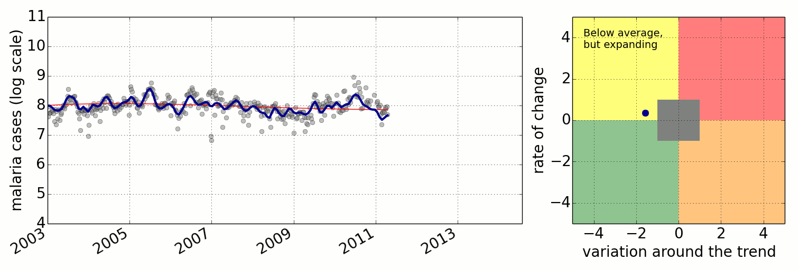

As part of my research, I work closely with Makerere University and the UN Pulse Lab, in Uganda, to model malaria incidence across the country.
The collaborators in this project are:
-- Martin Mubangizi
-- John Quinn
-- Neil Lawrence
We also organized a Gaussian Process Roadshow (2013), in Kampala, Uganda.
This is a preview of a monitor system we have been working on: 
The upper left quadrant represents an incidence below the long term average, but increasing; the upper right quadrant represents an incidence above the long term average and expanding; the bottom right quadrant represents an incidence above the average, but decreasing; and the bottom left quadrant represents an incidence below the average and decreasing. The gray area means that the signal is too weak in comparison to the noise.